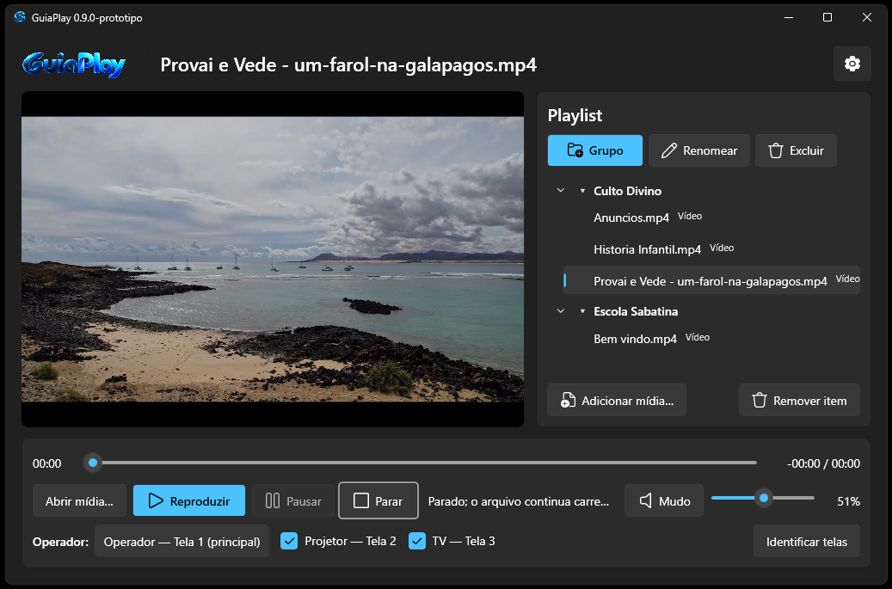
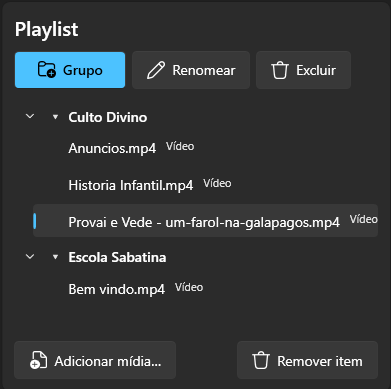
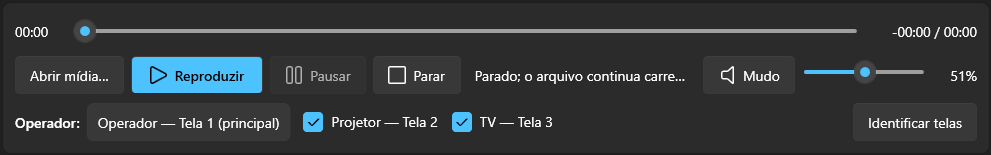

▣
Saídas multitelas
Escolha uma ou mais telas públicas antes de reproduzir um vídeo, mantendo o monitor do operador separado.
O GuiaPlay foi pensado para quem precisa controlar vídeos e áudios com rapidez, organizar uma playlist e escolher exatamente em quais telas o conteúdo será exibido.

Ideal para igrejas, auditórios, eventos, salas e qualquer ambiente em que o operador precise controlar mídias sem perder tempo.
Escolha uma ou mais telas públicas antes de reproduzir um vídeo, mantendo o monitor do operador separado.
Crie grupos virtuais, salve presets e organize suas mídias sem mover ou copiar os arquivos originais.
Arquivos de áudio funcionam sem abrir janelas de vídeo e podem usar o dispositivo de saída escolhido.
O próprio aplicativo verifica novas versões e informa quando uma atualização está disponível.
Separe conteúdos por grupos, mantenha os arquivos onde já estão e encontre rapidamente o que precisa reproduzir.

O GuiaPlay registra referências para as mídias. Isso evita duplicação de arquivos e deixa a organização livre para o operador.

Timeline, reprodução, pausa, parada, volume, mudo e seleção de saídas ficam acessíveis na mesma área.